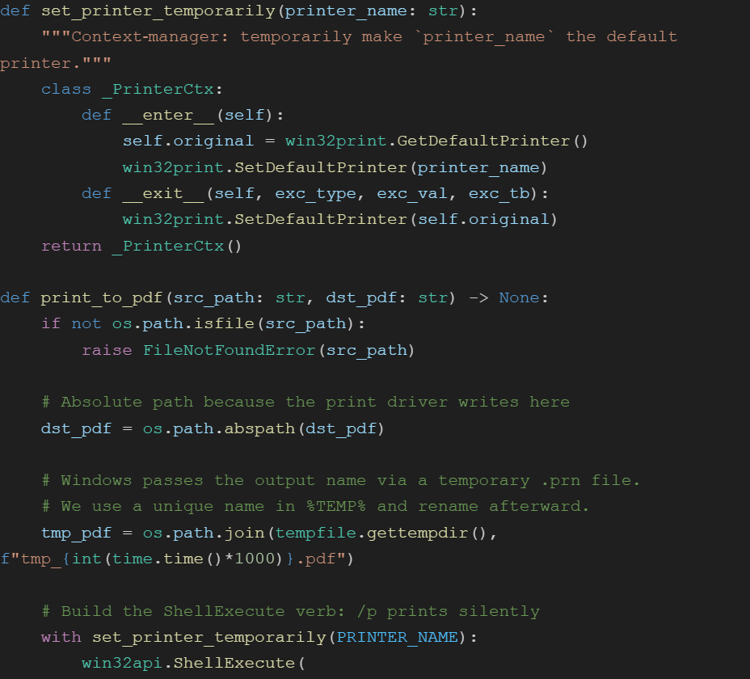

This project was a web scraper I developed using Python and Selenium to extract data from blog-based websites, focusing on categorization by date and genre. Its primary purpose was to collect and organize data in a format suitable for training a ChatGPT model I was creating for my mentor, aiming to replicate the specific writing style of a particular blog.

A specialized ChatGPT model designed to emulate the writing style of the blogs scraped from the website. I invested multiple hours training the model and adjusting settings to create a practical replica of the desired style for my mentor.

This project involved developing a Python script to automate value modification in an Excel sheet, specifically organizing company SIC codes for a marketing research project my mentor was working on. I utilized Python libraries, including pandas, to achieve these results.
Developed a Python script to automate the extraction and processing of shareholder letters from online PDF files for a marketing research project, improving data accuracy and efficiency.

The dependency script was designed to automate the handling and processing of the PDF files from various sources, ensuring data consistency and completeness. Using Python libraries such as pandas and openpyxl, the script facilitated seamless integration with existing marketing research workflows by automating data modifications and reducing manual errors.
A machine learning model that extracts specific data from XML files using Python's XML. Tree.ElementTree library. The model was designed to extract letters to investors from company annual reports for my mentor's project.

The script was developed to automate the identification of the "Letter to Investors" sections within annual report PDFs sourced from multiple companies. By converting annual report PDFs into XML format, the script enhanced structured data handling, significantly improving the accuracy and consistency of the identification process. Leveraging Python libraries such as pandas and openpyxl facilitated seamless integration with financial analysis workflows, reducing manual interventions and minimizing errors.
This project focused on implementing a Term Frequency-Inverse Document Frequency (TF-IDF) model to analyze and extract key insights from textual data in company annual reports. Using Python's scikit-learn library, the script was designed to identify the most relevant terms within financial documents, aiding in sentiment analysis and trend identification for my mentor’s research project.
I built a lightweight locator that scans every annual‑report PDF in a directory, pinpoints the first page containing a “Letter to Investors/Shareholders/Stakeholders” headline using a compiled regex, and outputs a neat two‑column CSV (file, start_page). Instead of pulling the letter’s full text, it simply logs where the section starts, letting downstream tools decide if or how to extract the content later. The core loop relies on pdfminer.six for fast text scraping and tqdm for progress bars, while robust try/except blocks capture corrupt or password‑protected files without breaking the batch run.

The script was designed to automate the formatting and integration of TF-IDF analysis results into Excel sheets. Utilizing Python libraries such as pandas and openpyxl, the script efficiently converted raw TF-IDF data into structured Excel formats, significantly enhancing data visualization and facilitating deeper analysis. This automation streamlined integration with existing data analysis workflows, reducing manual formatting tasks and ensuring high data accuracy.

I engineered this Python pipeline to transform sprawling executive‑history spreadsheets into clean, analysis‑ready tables. It ingests the raw Excel file, reshapes the 50‑column “wide” résumé blocks into tidy rows, tags each entry as a board seat or operating role with a layered regex classifier, and writes two polished sheets—Executive_Roles and Board_Roles—back to Excel. Built‑in assertions and null‑proof string handling keep the flow resilient, while memory‑savvy chunking lets the job scale comfortably to six‑figure record sets.
This script efficiently processes and matches detailed CXO role information from extensive datasets. It organizes, merges, and cleans executive-level professional experiences, focusing specifically on distinguishing board membership roles from other executive positions. The Python-based implementation leverages data manipulation libraries to optimize accuracy and integrity of information for clear, actionable insights.